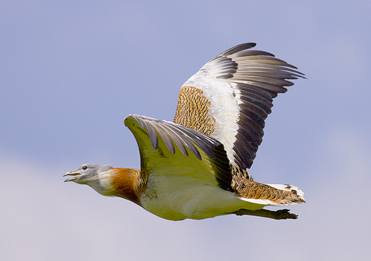
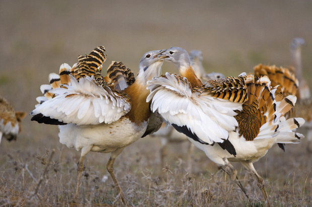
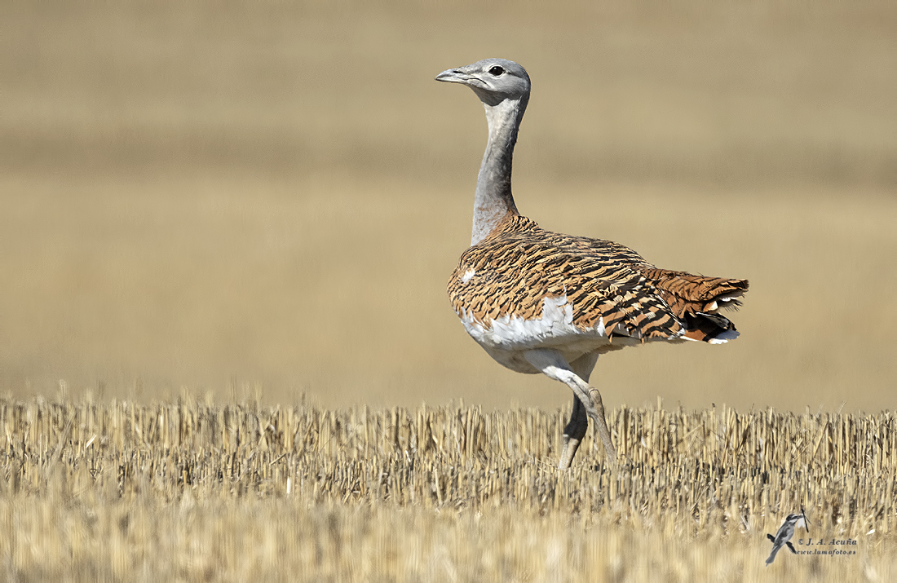
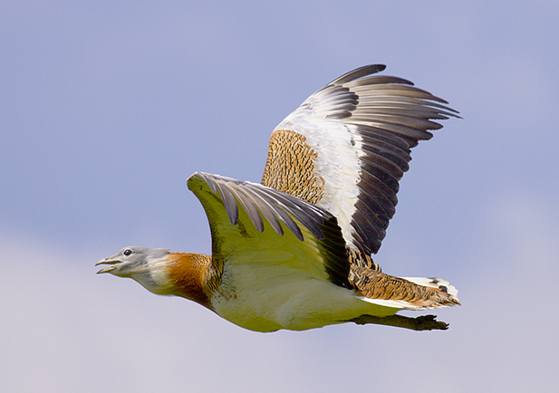
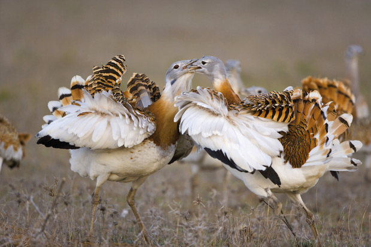
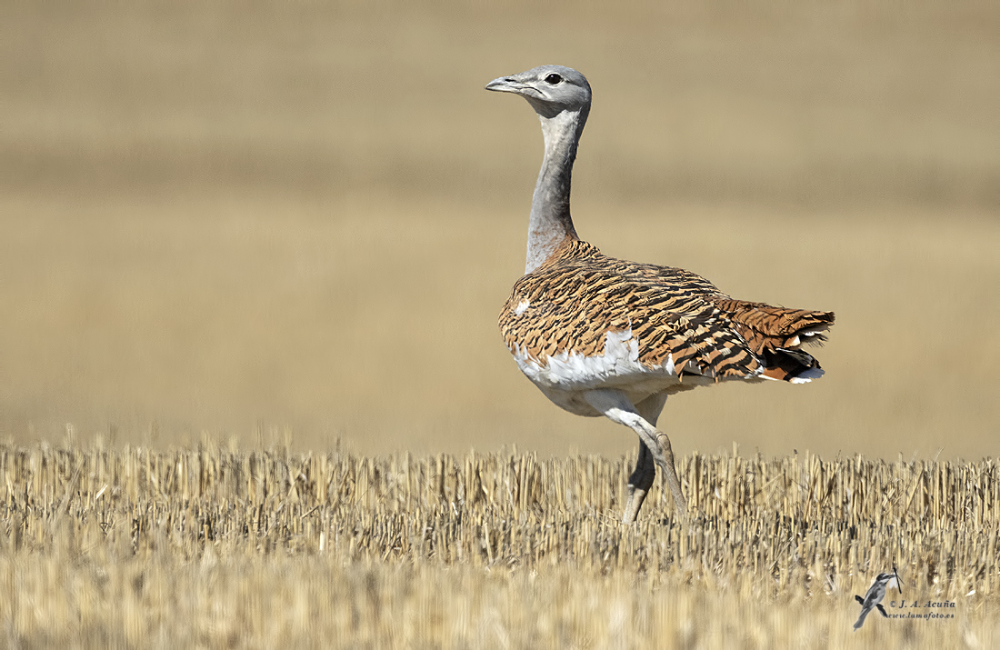

Avutarda
La avutarda es el ave de mayor peso de Europa. Los machos pueden alcanzar incluso hasta 16 kg, las hembras 4 kg. Es del tamaño de un pavo, con el cuerpo en posición horizontal. Las avutardas adultas machos se distinguen por la bigotera, que a los 6 años está plenamente desarrollada. Después de un impulso levanta el vuelo, entonces se muestran muy blancas. El vuelo es del tipo del ganso. Prácticamente son mudas. Es el ave más asustadiza de Europa; se echa a volar cuando un intruso se le acerca a 400 ó 500 m; tolera a un tractor hasta los 250 m.
Hábitat:
La avutarda vive en estepas naturales y de labor de gran extensión. Era favorecida por la antigua agricultura manual y se había propagado ampliamente por Europa Central; con la mecanización de la producción agrícola su población disminuye constantemente. En la actualidad está seriamente amenazada. Se conserva, sin embargo, una población en las llanuras de cereales del centro y sur de la península Ibérica. En Cataluña aparece esporádicamente.
Distribución:
La avutarda común (Otis tarda) es una especie de ave otidiforme de la familia Otidae, el único miembro del género Otis, que da nombre a la familia. Se distribuye por Europa (península ibérica y Europa central) y a través de Asia hasta China, además del norte de África.
Población:
Según el informe del Proyecto Avutarda del CSIC, la población actual de esta especie en la península se sitúa alrededor de los 30.000 y 35.000 ejemplares, situándose la mayor parte de ellas en zonas de cultivo de cereal de Castilla y León y Extremadura.
Nombre Científico:
Otis tarda.
 




